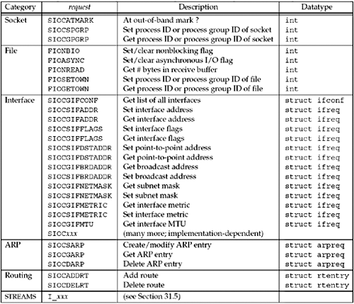

| [ Team LiB ] |
|
17.2 ioctl FunctionThis function affects an open file referenced by the fd argument.
The third argument is always a pointer, but the type of pointer depends on the request.
We can divide the requests related to networking into six categories:
Recall from Figure 7.20 that not only do some of the ioctl operations overlap some of the fcntl operations (e.g., setting a socket to nonblocking), but there are also some operations that can be specified more than one way using ioctl (e.g., setting the process group ownership of a socket). Figure 17.1 lists the requests, along with the datatype of what the arg address must point to. The following sections describe these requests in more detail. Figure 17.1. Summary of networking ioctl requests. |
| [ Team LiB ] |
|